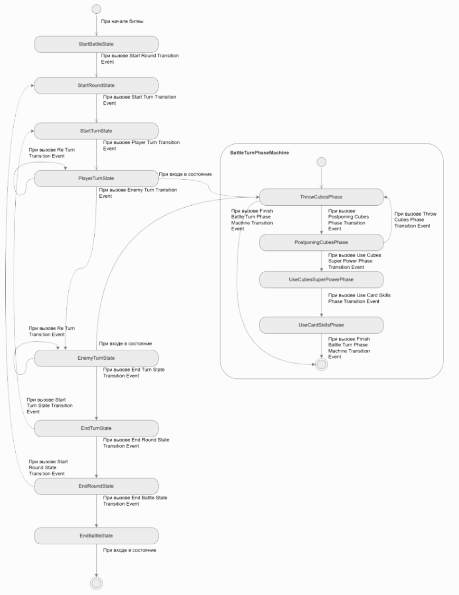

Solo Developer
Тактическая дуэль на костях, вдохновлённая механикой из Kingdom Come: Deliverance. Каждая кость — оружие с уникальной вероятностью выпадения граней. Просчитывай ходы наперёд, собирай комбинации и перехитри соперника.
Общие правила:
Правила игры:
Игрок начинает первым и бросает все шесть костей, затем откладывает выигрышные комбинации. Оставшиеся кости можно перебросить или передать ход сопернику. Выигрышные очки записываются на счёт при завершении хода.
Важно: если после броска костей вы не смогли ничего отложить, то набранные очки за раунд сгорают, а ход переходит к сопернику. Также, если в результате бросков вы сумели отложить все оставшиеся у вас кости, то можете перебросить все шесть костей ещё раз и продолжить свой ход.
| № | Комбинация | Очки |
|---|---|---|
| Одиночные | ||
| 1 | Одна единица | 100 |
| 2 | Одна пятёрка | 50 |
| Тройки | ||
| 3 | Три единицы | 1000 |
| 4 | Три двойки | 200 |
| 5 | Три тройки | 300 |
| 6 | Три четвёрки | 400 |
| 7 | Три пятёрки | 500 |
| 8 | Три шестёрки | 600 |
| Увеличение (доп. кость ×2) | ||
| 9 | Четыре тройки | 400 |
| 10 | Пять троек | 800 |
| 11 | Шесть троек | 1600 |
| Универсальные | ||
| 12 | Три пары (1+1, 2+2, 4+4 и т.п.) | 500 |
| 13 | Пять подряд (1–5 или 2–6) | 750 |
| 14 | Шесть подряд | 1500 |
В игре представлены 8 уникальных костей с разной вероятностью выпадения граней — от честных до шулерских. Выбирай кости с умом: каждая влияет на тактику и шансы собрать выигрышную комбинацию.
| № | Название | Описание | 1 | 2 | 3 | 4 | 5 | 6 |
|---|---|---|---|---|---|---|---|---|
| 1 | Игральная кость | Очень хорошо сделанная игральная кость. | 16% | 16% | 16% | 16% | 16% | 16% |
| 2 | Обычная игральная кость | Одна из немногих качественно сделанных шулерских игральных костей, дающих преимущество в игре своему хозяину. | 22% | 11% | 11% | 11% | 11% | 33% |
| 3 | Плохая игральная кость | Иногда кости падают хорошо, иногда — нет. Эта, как правило — нет. | 28% | 20% | 40% | 4% | 4% | 4% |
| 4 | Невезучая игральная кость | Игральная кость, которую лучше убрать как можно дальше. | 4% | 22% | 22% | 22% | 22% | 4% |
| 5 | Игральная кость для нечётных чисел | Шулерская игральная кость, на которой чаще выпадают нечётные числа. | 30% | 3% | 30% | 3% | 30% | 3% |
| 6 | Игральная кость для чётных чисел | Шулерская игральная кость, на которой чаще выпадают чётные числа. | 3% | 30% | 3% | 30% | 3% | 30% |
| 7 | Счастливая игральная кость | Если тебе улыбнулась удача, улыбнитесь ей в ответ. Иначе всё это будет выглядеть подозрительно. | 22% | 0% | 11% | 11% | 11% | 44% |
| 8 | Сбалансированная игральная кость | В её гранях только случай. Никто не знает, на чьей стороне окажется удача. | 33% | 0% | 0% | 0% | 33% | 33% |

Полный цикл разработки в одиночку. Реализовал механику броска костей с системой вероятностей, систему комбинаций и AI-противника.